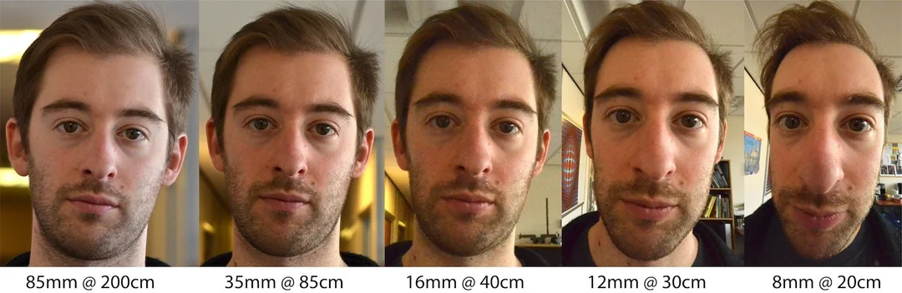

Programming Project #0 (
Programming Project #0 (proj0)In this class, we want you to become friends with every pixel. The first step toward this goal is to become friends with your camera—e.g., the one in your smartphone. In particular, the goal of this project is to get you some intuitive understanding of the somewhat subtle relationship between perspective, focal length/zoom, and the center of projection. Don't worry if these terms aren't familiar to you yet. For now, your task is to just take some photos with your camera, as described below:
Take a picture of your friend (or yourself) from close up. You get a typical distorted selfie image. Now step back several feet from your subject, zoom in, and take a second picture. Try to get the face in the second photo to be the same size as in the first photo. If you've done things right, the second portrait should look much better than the first one. Think about why this is.
Let's repeat the same procedure in reverse, for an urban scene. Pick a nice view down a long street (or a walking path on campus), zoom in, and take a photo. Now, walk down the street in the direction of your first shot, and take a second photo without zoom, such that the scene in the two photos appears approximately the same size. The first picture should look flattened, or compressed, compared to the second. Again, think about why.
In this part, we will be duplicating a classic film effect called the dolly zoom. It is a camera movement also known as the "Vertigo shot", after a famous scene in Hitchcock's Vertigo. Here are some examples of this effect in cinema:
The idea is to simultaneously move the camera back while also zooming in. First, come up with a good setting for the shot (e.g., a scene with stuffed animals is one popular choice). Now take a few (4-8 or even more!) still photos while you move the camera back and zoom in, keeping the resulting image roughly the same size. Combine your stills into an animated GIF file—you have a dolly zoom!
For this project, you must submit your project webpage. Take beautiful photos. Make your webpage visually appealing. Aesthetics matter!